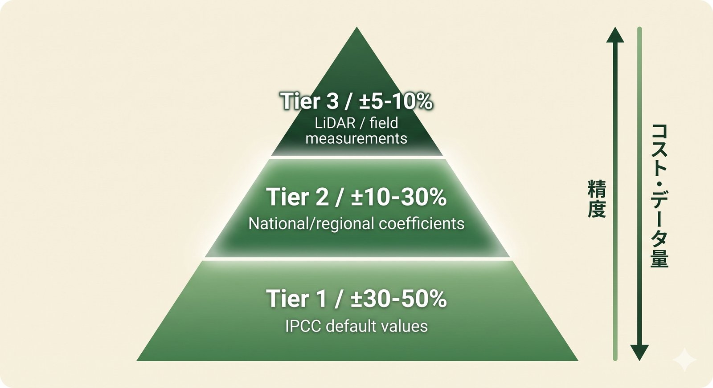
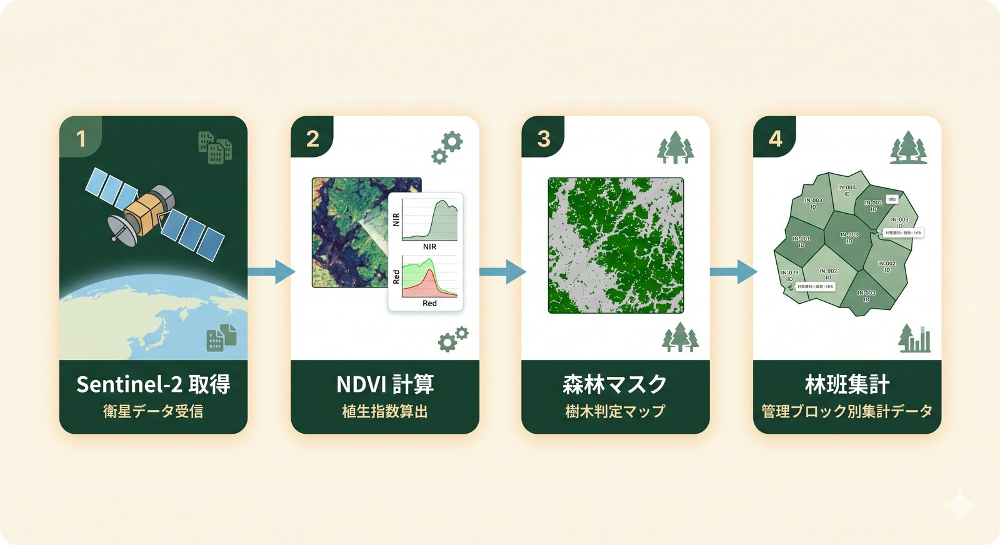
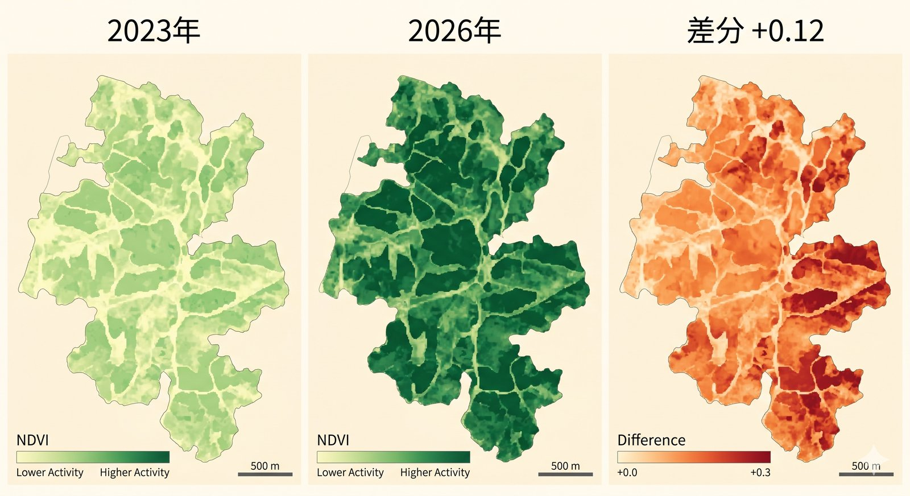

Satellite × Forest · IPCC AFOLU Tier 2
林野庁標準値だけでは精度不足、自社LiDARを買うほどの予算もない。 その間を埋める Tier 2 × 衛星NDVI という現実解を、 数式・処理フロー・実装スタックレベルで解説します。
森林のCO₂吸収量は、林野庁通知（令和3年12月）でも採用されている以下の式で算定します。
各項の意味と一般値は以下のとおりです。
| 項 | 意味 | スギ標準値 | ヒノキ標準値 |
|---|---|---|---|
| 幹成長量 | 1ha・1年あたりの幹体積増加（m³） | 5〜8 | 3〜5 |
| 拡大係数 | 幹以外（枝・葉）を加える倍率 | 1.23 | 1.24 |
| 地下部比率 | 根のバイオマス比率 | 0.25 | 0.26 |
| 容積密度 | 木材の密度（t/m³） | 0.314 | 0.407 |
| 炭素含有率 | 乾物中の炭素割合 | 0.51 | 0.51 |
| 44/12 | 炭素→CO₂ への質量換算 | 3.667 | 3.667 |
スギ40年生・1haで概ね 年間 8〜10 t-CO₂ の吸収が標準値となります。
IPCC（気候変動に関する政府間パネル）が定めるAFOLU（Agriculture, Forestry and Other Land Use）部門の 温室効果ガス算定ガイドラインには、3段階の精度レベルがあります。
IPCC が提供するデフォルト値を使う方法。世界平均値ベース。各国の現実とは乖離が大きい
国・地域固有の係数（樹種別・林齢別）を使う方法。日本は林野庁が標準値を整備済み。本記事のメインターゲット
個別森林の実測値（LiDAR・現地調査）に基づくモデル。研究機関・大手SI向け
日本の森林簿（自治体が管理する林班単位の樹種・林齢台帳）と IPCC ガイドラインを組み合わせると、自然に Tier 2 になります。

Tier 2 の式を使うには、まず「どこに森林があるか」を確定する必要があります。 従来は森林簿に頼っていましたが、森林簿は更新が10年に1度程度と古く、 近年の伐採・劣化が反映されていません。
そこで近年スタンダードになりつつあるのが、欧州 Copernicus 計画のSentinel-2 衛星から NDVI（正規化植生指数）を計算し、最新の森林状態を取得する方法です。
NDVI は -1〜+1 の範囲をとり、植物が活発な森林では概ね 0.6〜0.9 の値を示します。 もりみえるでは閾値 NDVI ≥ 0.5 を森林マスクの判定条件とし、 10mピクセルごとに森林か非森林かを判定しています。

広い AOI（例：市町村全域）に Tier 2 を一律適用すると、樹種・林齢のばらつきが 平均化されて誤差が拡大します。長野麻子さん（株式会社モリアゲ代表・元林野庁木材利用課長）からも 「100ha 超の集計は誤差が大きい」という指摘がありました。
そこで、もりみえるでは林班単位（中央値 約100ha）での集計に切り替えています。 林班ごとに森林簿で樹種・林齢を取得し、対応する Tier 2 係数を適用したうえで、 Sentinel-2 で「実際に植生があるピクセル」だけを集計します。
| 集計単位 | 誤差目安 | 必要データ |
|---|---|---|
| 市町村全域（数万ha） | ±30〜40% | 森林簿総量 + NDVI |
| 林班単位（約100ha） | ±20〜30% | 森林簿（林班別）+ NDVI |
| 20mメッシュ細分 | ±10〜15% | + 航空レーザ（LiDAR） |
LiDAR データはオープンデータ化が進んでおり、栃木・兵庫・高知の3県では 「らしんばん」（MIERUNE × 日本森林技術協会）として商用利用可で公開されています。 これらの地域では、20mメッシュ単位での Tier 2 → Tier 3 への移行が可能です。
もりみえるでは、静岡県森林クラウドから取得した1,102林班・合計161,182haに 本手法を適用し、林班ごとの CO₂ 吸収量を算定しています。
| 項目 | 値 |
|---|---|
| 対象林班数 | 1,102 林班 |
| 合計森林面積 | 161,182 ha |
| 主な樹種 | スギ（約45%）、ヒノキ（約30%）、広葉樹（約25%） |
| 推定年間吸収量 | 約 130 万 t-CO₂/年 |
| 林班あたり吸収量（中央値） | 約 1,180 t-CO₂/年 |
詳細は 静岡県森林レポート をご覧ください。
Sentinel-2 は5日に1回観測されるため、過去5年分の NDVI 時系列が手に入ります。 これを使うと、伐採・間伐・植林などの施業効果を量的にモニタリングできます。
たとえば「2023年→2026年で この林班の NDVI が +0.12 → 推定吸収量 +250 t-CO₂/年」 といった算出が可能です。これは従来、現地調査やドローン撮影で 数十万〜数百万円かかっていた MRV を、衛星データで年間1万円規模に 圧縮できる可能性を意味します。

もりみえるが採用している技術スタックは以下のとおりです。すべてオープンソース・無料サービスで構成されています。
| レイヤ | 採用技術 | ライセンス |
|---|---|---|
| 衛星データ取得 | Copernicus CDSE（pystac-client） | 無料・商用OK |
| NDVI 計算 | Python（rasterio + numpy） | OSS |
| 林班ポリゴン | 静岡県森林クラウド ベクトルタイル | オープンデータ |
| 森林簿係数 | 林野庁標準値（樹種・林齢別） | 公開 |
| 地図表示 | Leaflet + Esri World Imagery | 無料利用範囲 |
| 暗号検証 | TPM 2.0 attestation + Merkle hash | オープン仕様 |
最終更新：2026年5月17日。本記事は IPCC ガイドラインおよび林野庁公開資料に基づき、もりみえるが独自に整理したものです。